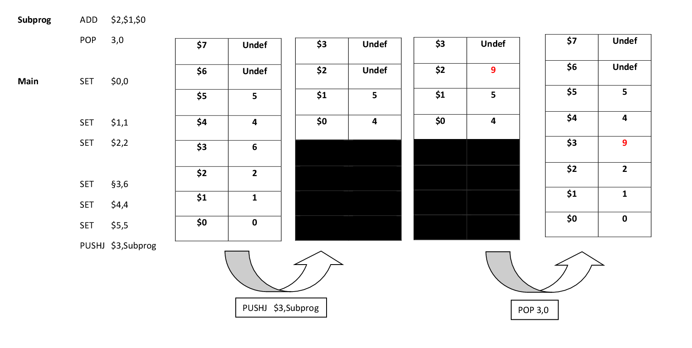
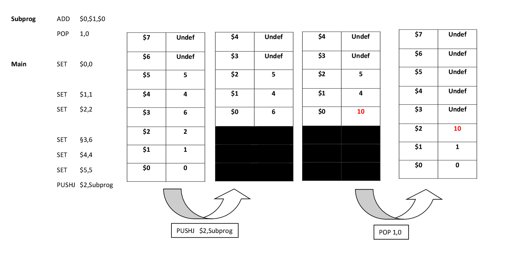

Here are two examples of the PUSHJ instruction followed by a POP instruction. First the registers are set with some values. After the values are set there is a PUSHJ instruction to the Subprog. The Subprog adds two numbers and stores them in a register. The following POP instruction jumps back to the Main program, where the next instruction (if there is one) after the PUSHJ is called. In the following two example programs you can study the behaviour of these two instructions for different X values for PUSHJ and POP.
 |  |
See also: